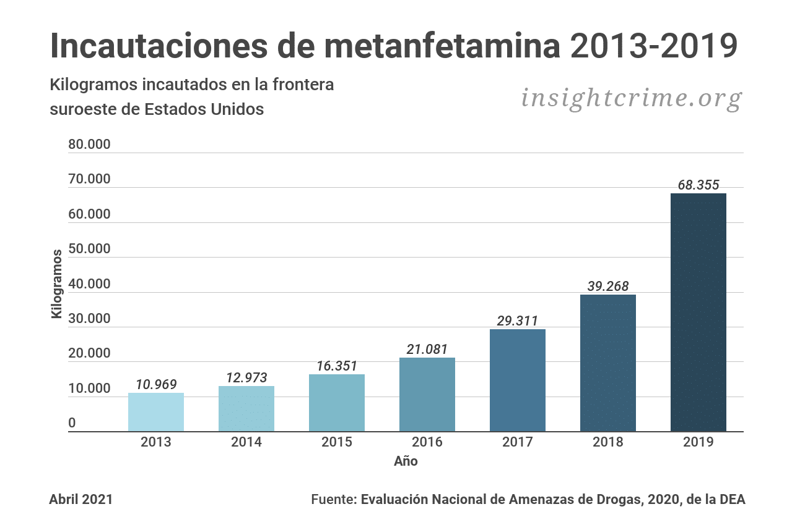
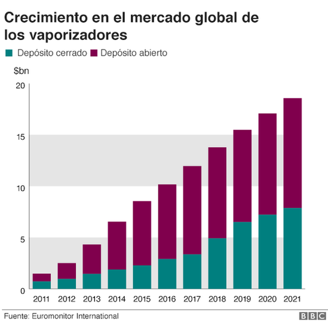

Muertes a causa de sobredosis a nivel nacional, cantidad entre todas las edades,
por género, 1999-2021. Más de 106.000 personas murieron en los Estados Unidos
por sobredosis relacionadas con las drogas en 2021, incluidas las drogas ilícitas
y los opioides recetados. La figura de arriba es un gráfico de barras y líneas
que muestra el número total de muertes por sobredosis en Estados Unidos relacionadas
con ciertas drogas ilícitas o de prescripción desde 1999 hasta 2021. Las barras
están debajo las líneas que muestran el número de muertes por género de 1999 a 2021
En 2022, aproximadamente el 0.2% de los estudiantes de 8.o grado, el 0.3% de los
estudiantes de 10.o grado y el 0.5% de los estudiantes de 12.o grado reportaron
haber consumido metanfetamina en los últimos 12 meses.Entre las personas de 12 años
o más en 2020, alrededor del 0.6% (o aproximadamente 1.6 millones) reportaron sufrir
de un trastorno por consumo de metanfetamina en los últimos 12 meses
El número de "vapeadores" ha aumentado vertiginosamente, desde 6 millones en 2011 a 35 millones en 2016.
La consultora de estudios de mercado Euromonitor estima que el número de adultos que usan vaporizadores llegará a 55 millones en 2021.El gasto en cigarrillos electrónicos está creciendo
El mercado global de los productos vaporizados está estimado en US$22.600 millones, mientras que hace apenas cinco años llegaba a los US$4.200 millones.
Estados Unidos, Japón y Reino Unido son los mayores mercados.Los cigarrillos electrónicos con tanques abiertos son los más populares
Hay dos grandes tipos de cigarrillos electrónicos: los que utilizan un tanque abierto y los que usan uno cerrado.En los de tanque abierto, el usuario puede recargar manualmente el líquido que se transforma en vapor, mientras que los cerrados utilizan recargas que se insertan directamente en la batería del cigarrillo electrónico.
El consumo diario de marihuana (consumo en más de 20 ocasiones en los últimos 30 días), en el mes anterior
y en el año anterior alcanzó los niveles más altos registrados hasta el momento desde 1988, cuando comenzaron
a monitorearse estas tendencias. La proporción de adultos jóvenes que reportaron el consumo de marihuana en
el año anterior llegó al 43% en 2021, un aumento significativo con relación al 34% de cinco años atrás (2016)
y el 29% de diez años atrás (2011). El 29% de los adultos jóvenes reportaron haber consumido marihuana en el
mes anterior en 2021, en comparación con el 21% cinco años antes (2016) y el 17% diez años antes (2011). El
consumo diario de marihuana también aumentó marcadamente en esos períodos: en 2021, fue reportado por el 11%
de los adultos jóvenes, lo cual señala un aumento importante con relación al 8% de 2016 y al 6% de 2011.
El tabaco mata hasta a la mitad de las personas que lo consumen.
Cada año, más de 8 millones de personas fallecen a causa del tabaco. Más de 7 millones de estas defunciones se deben al
consumo directo de tabaco y alrededor de 1,2 millones son consecuencia de la exposición de no fumadores al humo ajeno.
Más del 80% de los 1300 millones de consumidores de tabaco que hay en el mundo viven en países de ingresos medianos o bajos.
En 2020, el 22,3% de la población mundial consumía tabaco, concretamente el 36,7% de todos los hombres y el 7,8% de las mujeres del mundo.
Los reportes de consumo de alcohol en modalidad de atracón —definida como cinco o más
bebidas seguidas en las últimas dos semanas— entre los adultos jóvenes retornaron a los niveles prepandémicos en 2021, luego de mostrar
una disminución importante en 2020 (el consumo alcanzó al 32% en 2021, en comparación con 28% en 2020 y 32% en 2019). La bebida intensa
definida como beber diez o más bebidas seguidas en las últimas dos semanas— alcanzó su nivel más alto desde que comenzó a medirse en 2005:
fue reportada por el 13% de los adultos jóvenes en 2021, en comparación con el 11% en 2005. Sin embargo, el consumo de alcohol en el último
mes y el último año, al igual que el consumo diario, han mostrado una tendencia descendente entre los adultos jóvenes en los últimos diez años.
Por ejemplo, en 2021, el 66% de los adultos jóvenes reportaron consumo de alcohol en los últimos 30 días, una considerable disminución con
relación al 70% registrado en 2016 y el 69% registrado en 2011.
El número de pacientes que habían consumido al menos una benzodiacepina (o análogo de ésta) de forma prolongada fue de 6.885 (benzodiacepinas: 6.424; análogos: 461), de los cuales el 73,4% tenía 65 o más años de edad, el 70,9% eran mujeres y el 73,0% estaba adscrito a un ABS urbana. Por orden de frecuencia, las benzodiacepinas o análogos más consumidos fueron: lorazepam (28,3%), lormetazepam (18,0%), alprazolam (15,7%), diazepam (13,2%), zolpidem (6,1%), bromazepam (5,6%) y clorazepato dipotásico (5,1%).
En el análisis bruto, la prevalencia global del consumo prolongado de benzodiacepinas o análogos fue del 6,9% (IC del 95%, 6,7-7).
Globalmente, al comparar las diferentes prevalencias se encontraron diferencias estadísticamente significativas (p < 0,05) para los distintos grupos de edad (a mayor grupo de edad, mayor prevalencia [el 2,3 frente al 24,1 frente al 27,3%, respectivamente]), sexo (las mujeres mayor prevalencia que los varones [el 9,8 frente al 4,0%]) y localización del ABS (centros rurales mayor prevalencia que centros urbanos [el 8,0 frente al 6,5%]). Se observó una elevada variabilidad al comparar las prevalencias brutas en cada una de las diferentes ABS del Servicio de Atención Primaria Reus-Altebrat
DROGAS
FENTANILO
GRAFICA
METANFETAMINA
GRAFICA

VAPEADORES
GRAFICA

CANNABIS
GRAFICA
TABACO
GRAFICA
ALCOHOL
GRAFICA
BENZODIACEPINA
GRAFICA